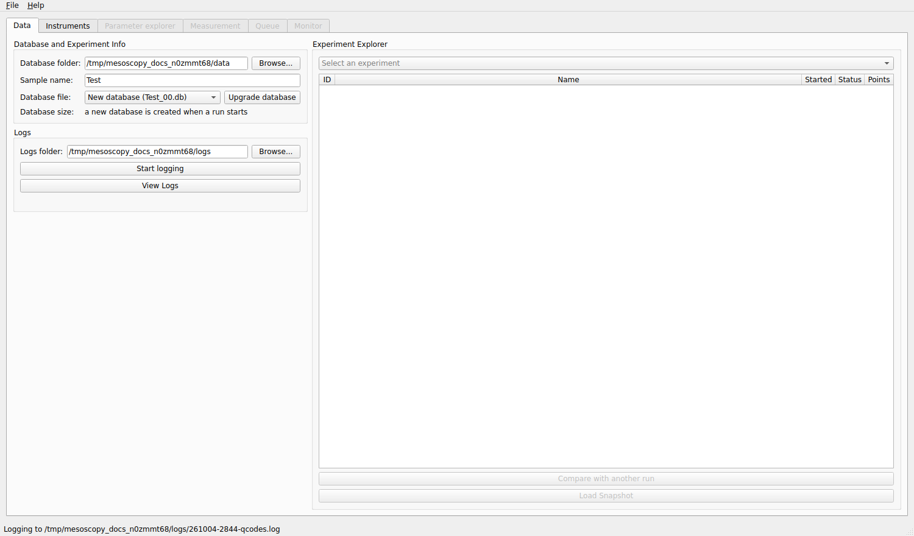
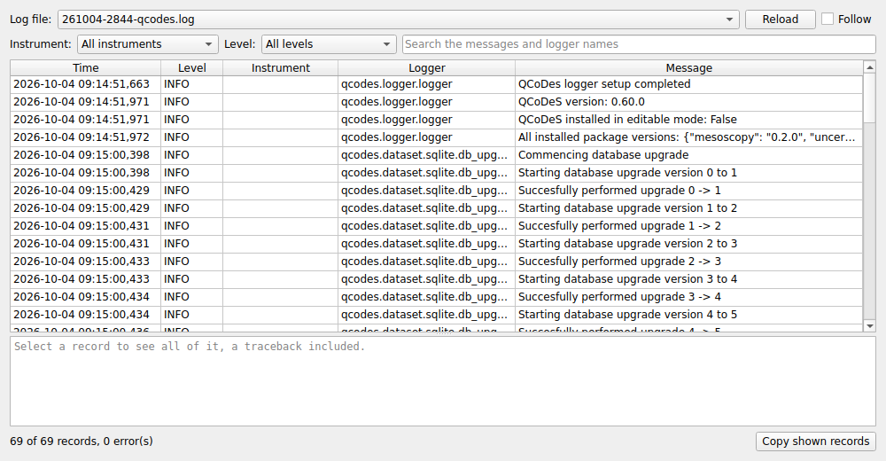
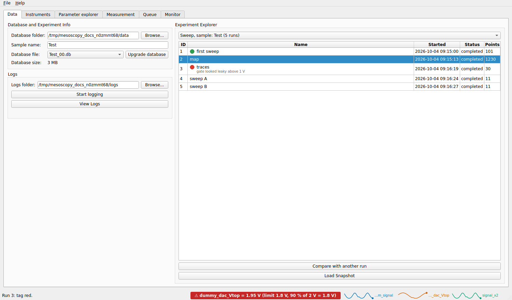
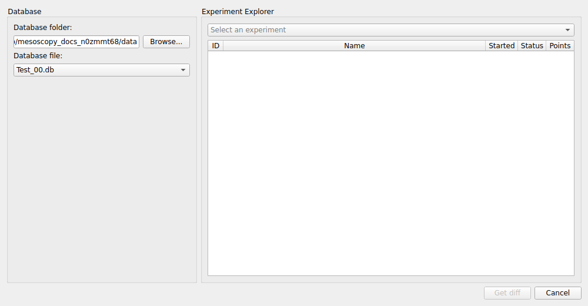

Data tab
The Data tab is the first one. It says where the data goes (the database folder and the sample), where the QCoDeS log is written, and it is the explorer of everything that was measured: experiments, runs, tags and notes.


The Data tab, with the database folder, the sample name and the logs folder filled in.
Database and Experiment Info
- Database folder
The folder where the databases are kept. Choose it with Browse….
- Sample name
The name of the sample you are measuring. Databases are named after it:
<sample>_<NN>.db, withNNtwo digits, for exampleHall_bar_00.db. Spaces and other unsafe characters become_. You never type a database name.- Database file
The database the next measurement is written to. It lists the existing databases of the folder; the empty entry means a new database, which is created when the first measurement starts. Selecting an existing database lets you continue in it.
- Database size
The size of the selected database. A database that grows above 750 MB is closed: the next measurement starts the next one of the series (
Hall_bar_01.db). This keeps every file small enough to copy, back up and open quickly.- Upgrade database
Starts the next database of the series now, whatever the size of the current one, for instance when you change something in the setup and want a clean file. It is not available while a measurement runs.
The Instruments tab opens as soon as a database folder and a sample name (or an existing database) are given.
Logs
- Logs folder
The folder for the log files. The QCoDeS log (every command sent to an instrument, warnings, errors) is written there, and so are the log files of the Monitor.
- Start logging
Starts the QCoDeS logger with its file in that folder. Do it at the beginning of a session: the log is the first place to look when an instrument behaves strangely.
- View Logs
Opens the log viewer: pick a file, filter by instrument, by minimum level (errors included) and by text, and select a record to read all of it, traceback included.


The log viewer.
The Experiment Explorer
Below the database information, the explorer lists what is in the selected database. Choose an experiment (the Experiment Name of the Measurement tab groups related measurements) and the table shows its runs:
Column |
Meaning |
|---|---|
ID |
the number of the run in the database |
Name |
the measurement name, with a coloured dot if the run is tagged, and the first line of its notes |
Started |
the date and time the run started |
Status |
completed, or not completed (a run that was interrupted) |
Points |
the number of points written |


The experiment explorer. The first run is tagged green, the third red and has a note.

Comparing two runs
Select a run and click Compare with another run, then pick a second run (from any database; it is only read). mesoscoPy shows what differs between the snapshots of the two runs: the values of the instruments, the definitions of the experiment parameters and the setup of the Measurement tab. It is the quickest way to find out what changed between a good run and a bad one.


Loading a snapshot
Every run stores a snapshot: the state of all the instruments and the setup at the moment it started. Load Snapshot brings a run’s setup back: it connects the instruments of the run, restores their settings and the experiment parameters, and fills the Measurement tab as it was. Nothing is run, and you review every change in a window before anything is written to an instrument. It is unavailable while a measurement runs, since it sets instruments.